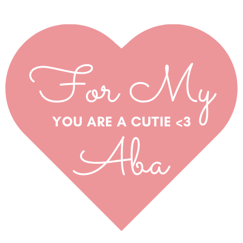

Some of the things I know about you
1. Your favorite color is blue 2. Friends is more than your favorite show 3. You like to sit and watch the ocean, because it's peaceful 4. You are super smart and you know it 5. You genuinally like to help and teach people 6. You love coffee and would probably bath in it if you could 7. You are a total foodie hehehe I PICKED CORN 8. You get really funny when your tired 9. Which can make you a little forgetful 10. But you always seem to remember the important things A. There is so so so much more to you and to list, but then this list would go on for eternity!